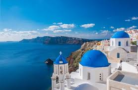
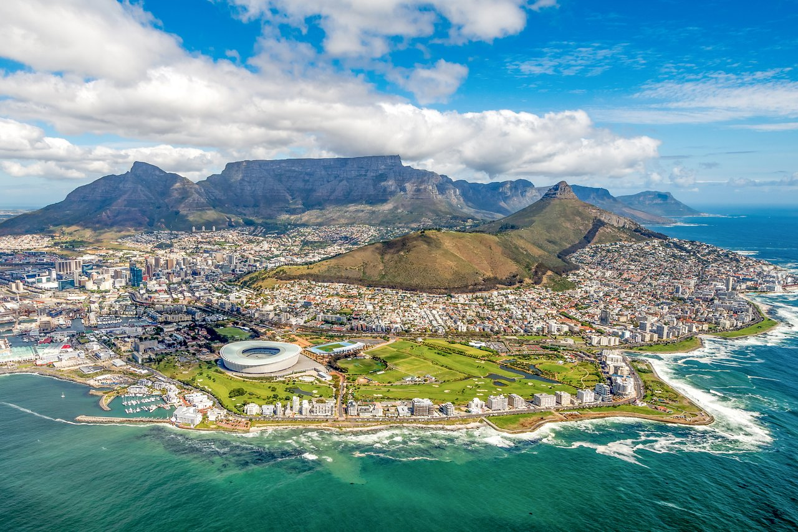
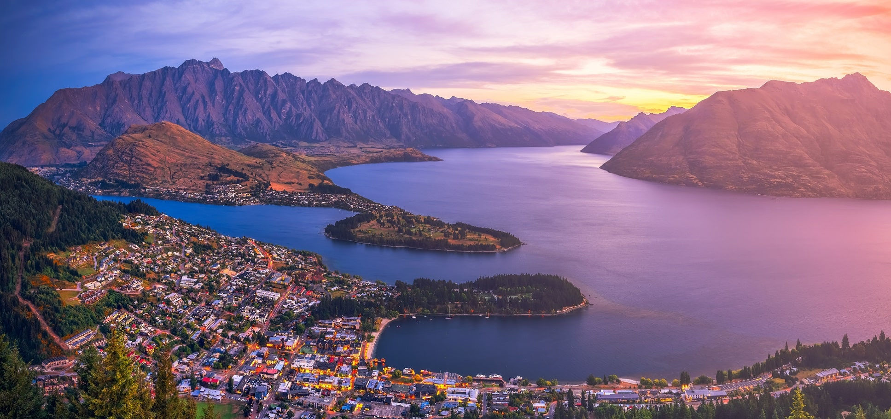

Kyoto
Kyoto is known for its beautiful temples, traditional tea houses, and stunning gardens. Visitors can explore historic districts, experience Japanese culture, and enjoy breathtaking cherry blossoms in spring.
Kyoto is known for its beautiful temples, traditional tea houses, and stunning gardens. Visitors can explore historic districts, experience Japanese culture, and enjoy breathtaking cherry blossoms in spring.

Santorini is known for its stunning views of the Aegean Sea, whitewashed buildings, and blue-domed churches. Visitors can enjoy beautiful sunsets, pristine beaches, and delicious Mediterranean cuisine.
Reykjavík serves as a gateway to Iceland's dramatic landscapes. Travelers can discover geysers, waterfalls, volcanic terrain, and, during the winter months, the magical Northern Lights.

Nestled between mountains and the ocean, Cape Town combines natural beauty with vibrant city life. Visitors can hike scenic trails, explore nearby vineyards, and visit stunning coastal viewpoints.

Often called the adventure capital of the world, Queenstown offers activities such as hiking, skiing, bungee jumping, and boating. Its surrounding mountains and lakes provide unforgettable scenery year-round.

Cusco blends rich history with spectacular mountain landscapes. Once the capital of the Inca Empire, it serves as the starting point for journeys to the famous Machu Picchu and other archaeological wonders.
Cusco blends rich history with spectacular mountain landscapes. Once the capital of the Inca Empire, it serves as the starting point for journeys to the famous Machu Picchu and other archaeological wonders.